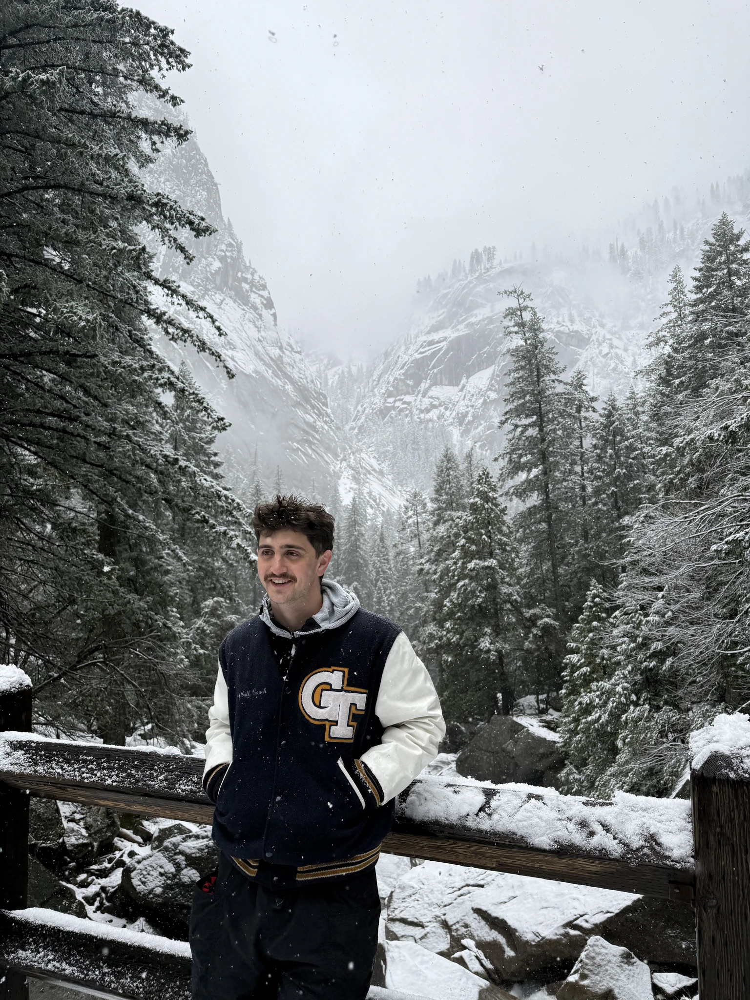
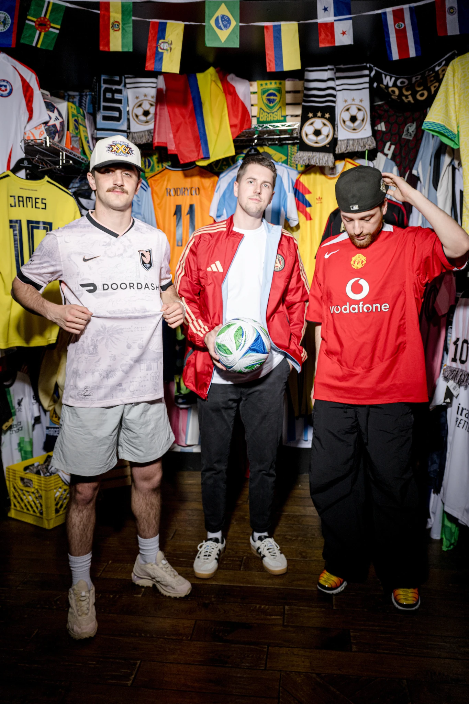
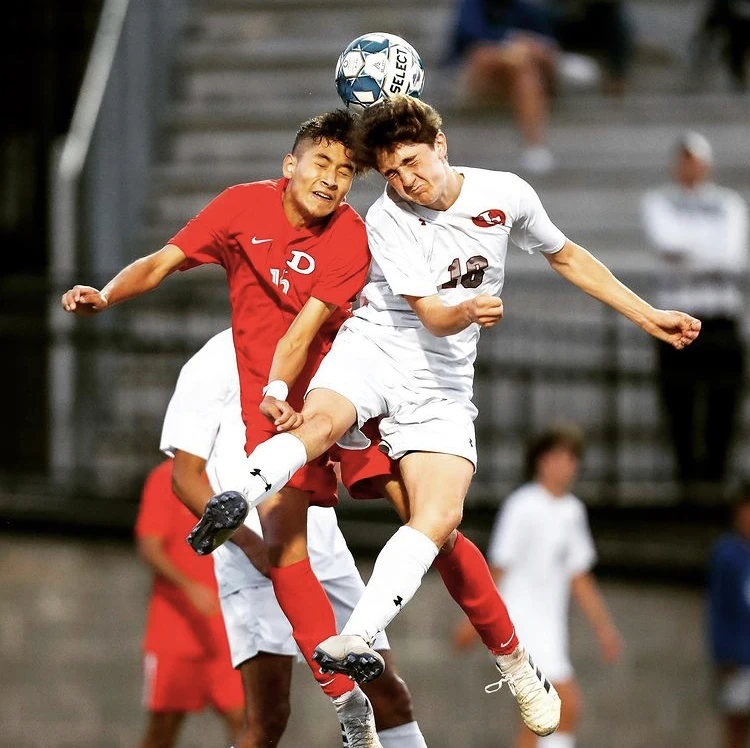
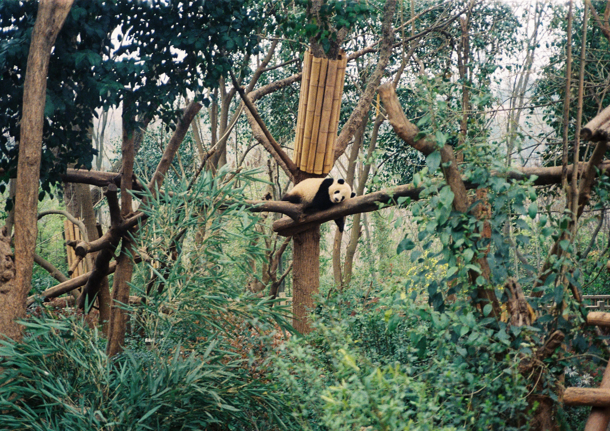
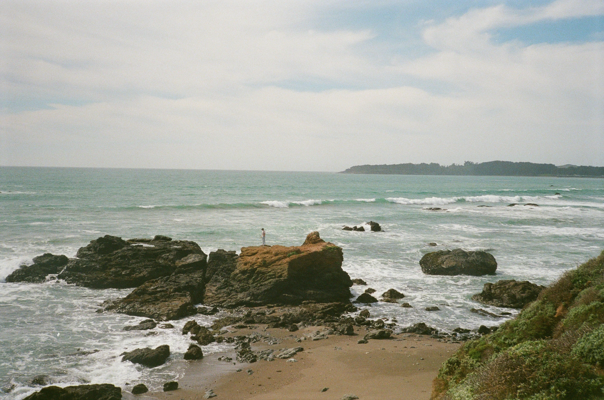
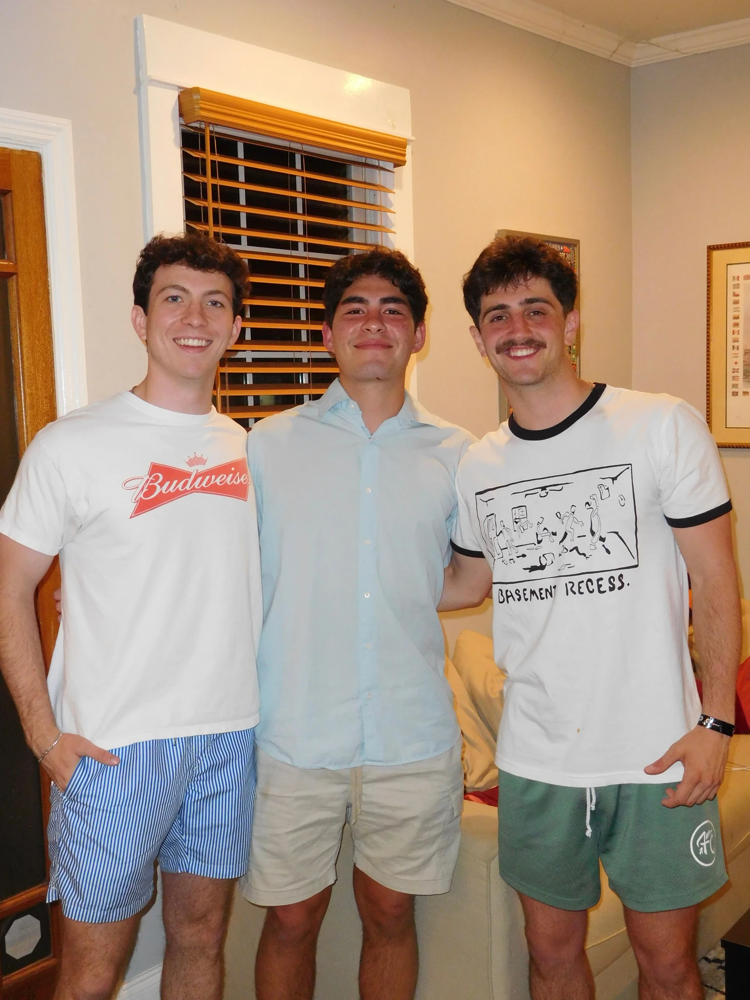
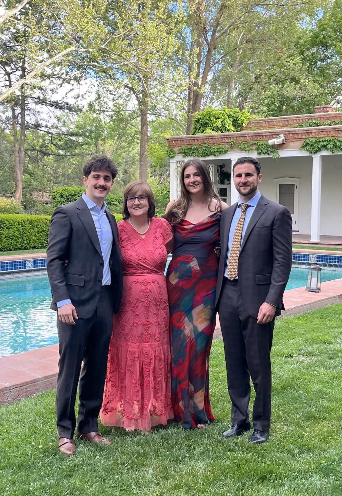
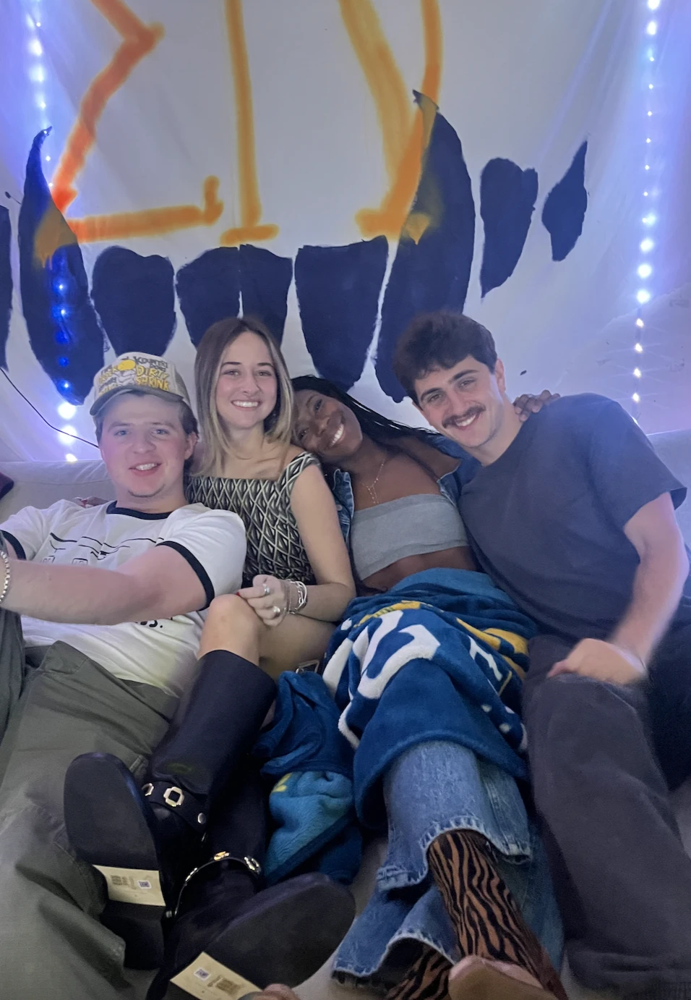

Designer / Engineer
Sam Grayson Beagle
With an engineering degree from Georgia Tech, I never thought I’d find myself in the world of design. Little did I know, this has been all I’ve wanted to do for a long time.
From playing soccer at Georgia Tech and creating graphic content for the team to starting a vintage clothing market that took me to my own limits of service design, I got my hands dirty in design by accident.
Now, with a Master of Industrial Design from Tech, I focus on products that enhance others’ lives and abilities. I love music, clothes, and sport. I follow all three closely and am inspired by them continuously.

A few of my favorite things.
Good music
Soccer / football / fútbol


The great outdoors (and film)


Friends + family


